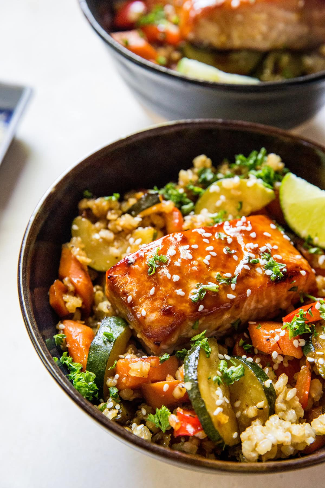

Salmon Teriyaki Bowl

Description
A simple, high protein dinner! Only 5 ingredients but delicious enough to having you wanting another bowl..
Ingredients
- 4 (4to 6 ounce) salmon fillets
- 1/2 teaspoon kosher salt
- 1/2 teaspoon freshly ground black pepper
- 1/2 cup teriyaki sauce, such as Trader Joe's Soyaki, plus more as needed
- 3 cups cooked jasmine rice
- Sriracha or other hot sauce (optional)
- 2 cups shelled edamame, prepared according to package directions, warm
- 1 avocado, peeled and diced, or more to taste
Steps
- Preheat the oven to 450 degrees F (235 degrees C).Line a rimmed baking sheet with foil and lightly grease the pan.
- Season salmon with salt and pepper and spread 1 tablespoon teriyaki sauce over each fillet. Set salmon on the prepared baking sheet
- Bake in the preheated oven until salmon flakes easily with a fork, 10 to 12 minutes, or to your preferred doneness.
- Meanwhile prepare rice and edamame according to package directions; keep warm.
- Divide rice among bowls and top edamame. Flake 1 piece of salmon on top and add avocado.
- Drizzle 1 to 2 tablespoon of remaining teriyaki sauce over each bowl and drizzle with hot sauce
Home